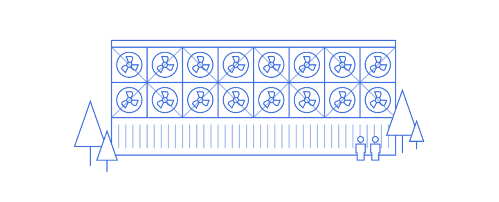

Direct air capture of CO2 below $100 / ton
Ultimately, direct air capture (DAC) will cost less than $100 per tonne of CO2 captured. This is based on both projections from several exciting startups (including Carbon Capture), and analysis done by the National Academy of Science and Medicine (NASEM) on the current cost of negative-emissions technologies:
Carbon Removal Cost
If fossil-based enerygy resources are used to provide the energy requirements of a direct air capture system, then an accurate estimate of the cost to removing CO2 from the air requires consideration of the net CO2 removed because burning fossil fuels produces CO2. On average, the costs for net CO2 removed for the solid sorbent-based approach range from $89 to $877/tCO2, depending on the adsorption scenario, while the costs range for the solvent-based approach range from $156 to $506/tCO2, depending on the use of natural gas or renewable H2 for the thermal source.
Source: National Academy of Science and Medicine, 2019
At this cost of capture, the economics of power-to-fuels and other products from CO2 improve significantly.
Photo by Jessie Jess
For those looking to learn more about the main DAC technologies and market drivers, check out our thought paper and webinar on Carbon Capture.
For the full NASEM analysis of Direct Air Capture technologies, see Chapter 5 of their 2019 report on Negative Emissions Technologies.